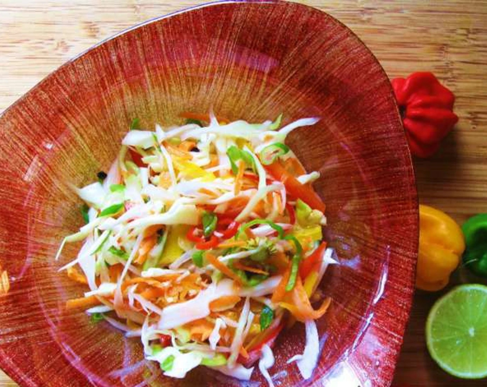

Pikilz (Haitain Spicy Relish)

The prefect topping to satisify your spicy tooth!
This bright and spicy relish (produced "pick-lees") is a common dish at any Haitain cookout.
Athough this dish consist of vegetables is it packed with flavor and heat. Pikliz are typically
served with Tassot Cabrit (fried goat) and Bannann Peze (fried plantain).
I hope you like spicy food because we're bringing up heat!
Ingredients List
Roughly 8 servings.
- Cabbage
- Carrot
- Lime
- Distilled White Vinger
- Red Onion
- Scotch Bonnet Pepper
- Salt
Steps
- Use a shredder or thin slice lengthways a half of a cabbage head (roughly 2 cups).
- Use a carrot slicer to thinnly slice 1 carrot.
- Thinnly slice one medium-sized red onion.
- Finely slice 6 scotch bonnet peppers.
- Add the sliced vegetables into a large mixing bowl.
- Add 1 tsp of salt, 2 cups of vinegar, and juice from 1/2 of lime into the bowl.
- Thoroughly stir the mixture then transfer your pilkiz into a sealed jar for storage.
- Allow your pikliz to marinate for at least 1-2 days in your refrigerator.
- Now served your pikliz with some your favorite Haitian appetizers or enjoy it as a side dish.